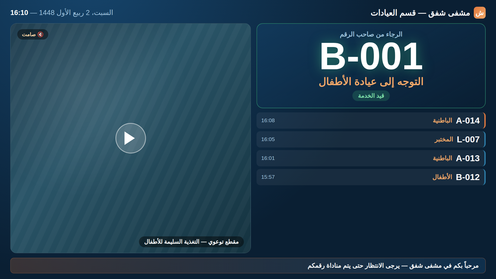

نظام يدير رحلة المريض من لحظة سحب التذكرة حتى انتهاء الخدمة: يوزّع الأدوار تلقائياً على العيادات، ينادي المرضى صوتياً وبصرياً، ويمنح الإدارة صورة دقيقة عن أزمنة الانتظار وأداء الكوادر.
في صالة انتظار بلا نظام، يقف المرضى في صفوف غير واضحة، ويضطر الموظف لمناداة الأسماء بصوته، ولا تملك الإدارة أي رقم حقيقي عن حجم الضغط أو زمن الانتظار. هذا النظام يعالج المشكلات الثلاث معاً.
لكل عيادة طابورها المستقل وترقيمها الخاص، والدور يُمنح بالترتيب دون تدخّل أو محاباة.
الرقم يظهر بحجم كبير على شاشة الصالة، ويُنطق صوتياً بالعربية مع اسم العيادة.
متوسط زمن الانتظار وزمن الخدمة لكل عيادة ولكل موظف، بأرقام لا بتقديرات.
الترقيم يبدأ من جديد كل صباح تلقائياً، والشاشات تعمل بلا تدخّل يومي.
لكل دور في المركز شاشته الخاصة، مصمّمة لطبيعة استخدامها ولا تعرض إلا ما يلزم مستخدمها.
توضع عند مدخل الصالة. المريض يختار عيادته من أزرار كبيرة، فتصدر تذكرته وتُطبع فوراً على طابعة حرارية. تعمل بوضع ملء الشاشة ولا تحتاج إشرافاً.
/kioskشاشة كبيرة في صالة الانتظار تعرض الرقم المنادى عليه واسم عيادته، وقائمة بآخر النداءات وحالة كل منها، مع تنبيه صوتي عند كل نداء وشريط إخباري اختياري.
/displayيختار الموظف عيادته فيبدأ عمله مباشرة. أزرار كبيرة لاستدعاء التالي وإعادة النداء وبدء الخدمة وإنهائها، مع عدّاد يقيس زمن الخدمة الجارية.
/employee/callإدارة العيادات والحسابات، وتقارير الأداء والرسوم البيانية، وسجل التذاكر المفصّل، وضبط الهوية البصرية وقالب التذكرة المطبوعة.
/admin| الحساب | ما يستطيع الوصول إليه |
|---|---|
| مدير | كل الشاشات ولوحة التحكم والتقارير والإعدادات |
| موظف | شاشة النداء فقط، ومقيّد بالعيادات المخصّصة له |
| جهاز الكشك / العرض | شاشته فقط، ويفتحها بمفتاح جهاز دون حساب مستخدم |
هي الواجهة التي يراها المريض طوال انتظاره، ولذلك صُمّمت لتُقرأ من آخر الصالة: الرقم بأكبر حجم ممكن، واسم العيادة بلون مميّز، وحالة كل تذكرة ظاهرة بوضوح.

كل نداء وكل خدمة تُسجَّل بتوقيتها. النتيجة صورة رقمية دقيقة عن حركة المركز تُغني عن التقديرات، وتكشف أين يتراكم الضغط فعلاً.
| المؤشر | الفائدة الإدارية |
|---|---|
| عدد المنتظرين الآن | رصد الضغط لحظياً واتخاذ قرار بتعزيز عيادة |
| متوسط زمن الانتظار | قياس جودة الخدمة المقدَّمة للمريض |
| متوسط زمن الخدمة | مقارنة أداء العيادات والكوادر |
| التذاكر لكل عيادة | توزيع الموارد بحسب الطلب الحقيقي |
| التذاكر لكل موظف | متابعة الإنتاجية بموضوعية |
| حالات عدم الحضور | تقدير الفاقد وتحسين آلية النداء |
جدول يعرض كل تذكرة على حدة ضمن أي مدى تاريخ: رقم الدور، العيادة، التاريخ ووقت الخدمة، الحالة، الموظف الذي خدمها، وزمنَي الانتظار والخدمة بالدقائق. يصلح مرجعاً عند مراجعة حالة بعينها أو إعداد تقرير دوري.
شعار المنظمة وألوانها يُرفعان من لوحة التحكم ويُطبَّقان على النظام بالكامل — شاشة الدخول، لوحة التحكم، الكشك، شاشة العرض، والتذكرة المطبوعة — دون أي تعديل برمجي. يكفي لونان أساسيان وتُشتق منهما بقية الدرجات تلقائياً.
شكل الوصل يُبنى من عناصر جاهزة: الشعار، اسم الجهة، اسم العيادة، رقم التذكرة، التاريخ والوقت، ونصوص ثابتة — مع تحكّم بالترتيب والمحاذاة وحجم الخط. يمكن حفظ أكثر من قالب وتفعيل واحد منها.
| العنصر | المواصفات |
|---|---|
| الخادم | جهاز واحد بنظام ويندوز أو لينكس داخل المركز |
| الشبكة | شبكة محلية تربط الأجهزة — الإنترنت غير مطلوب |
| شاشة العرض | شاشة أو تلفاز مع جهاز أندرويد أو حاسب صغير |
| جهاز الكشك | شاشة لمس + طابعة حرارية ٨٠ مم |
| جهاز الموظف | أي حاسب أو جهاز لوحي متصل بالشبكة |
| إطار العمل | ASP.NET Core 8 مع Blazor Server |
| قاعدة البيانات | PostgreSQL |
| التحديث اللحظي | اتصال دائم بين الخادم والمتصفح (WebSocket) |
| الطباعة | عبر المتصفح مباشرة — تعمل مع أي طابعة معرّفة بالنظام |